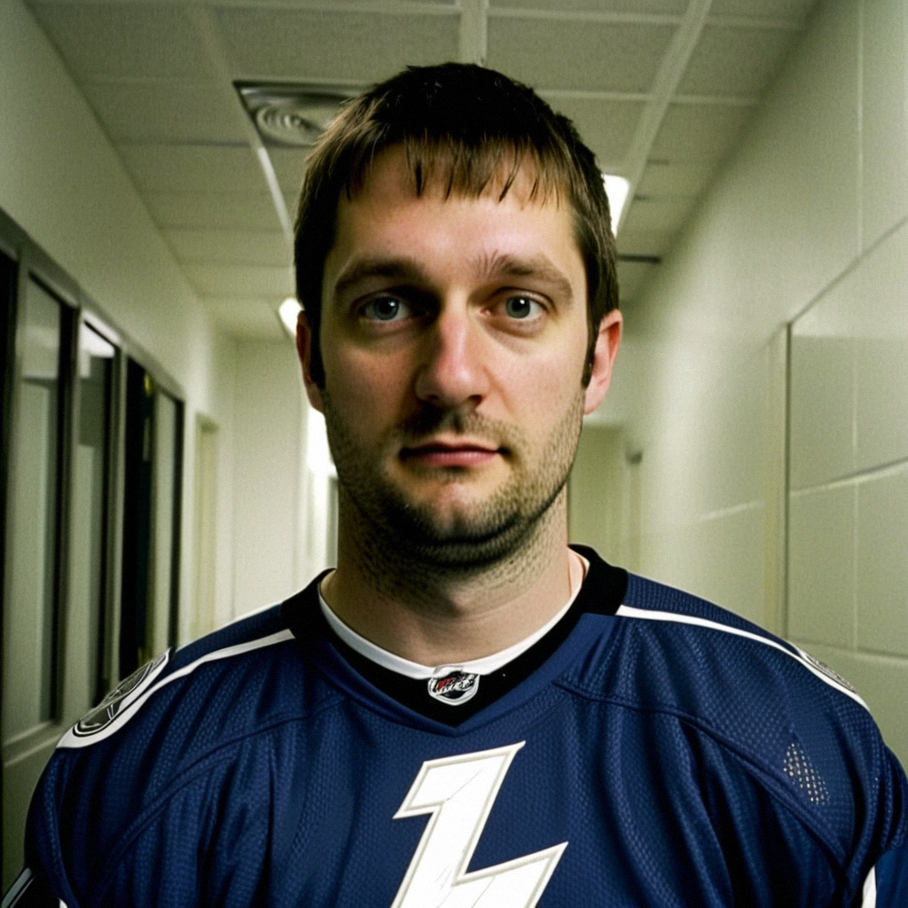

Khabibulin on the One That Got Through: Thirteen Wins, Twenty-Two Shots, No Excuse
The Tampa Bay goaltender replays the only goal EDM scored on 22 shots and credits Dan Boyle's two-goal night from the blue line.
 Marcus BellRinkside reporter · The Tunnel
Marcus BellRinkside reporter · The Tunnel
1:11 · synthetic voices, produced from the record · download
 Nikolai Khabibulin92 earned his 13th win of the season, stopping 21 of 22 in
Nikolai Khabibulin92 earned his 13th win of the season, stopping 21 of 22 in  Tampa Bay Lightning's 7-1 rout of
Tampa Bay Lightning's 7-1 rout of  Edmonton Oilers on December 5. Defenceman Dan Boyle scored twice from the point to go with his 4 points on the night.
Edmonton Oilers on December 5. Defenceman Dan Boyle scored twice from the point to go with his 4 points on the night.
Transcript
Marcus Bell here in the corridor at the St. Pete Times Forum. Nikolai, thirteen on the season, seven tonight. How do you take it?
Thirteen. Yeah, that is good. When the boys put seven in, the win comes easy. I just do my job. That is the night.
You saw 22 pucks all evening. One got in. Walk me through that.
The screen, the traffic in front. I see the stick, I see the body, I do not see the puck. It is there already. No excuse. One on 22, that is the job.
Was there a moment where you needed to be sharp? A four-nothing game, a rush comes, you need that save to keep it clean?
No. Not tonight. The boys, they do not give that. I want that save. I want to be busy, maybe 30, 35 shots. Today, no. That is the only complaint I have.
Dan Boyle scored twice tonight, both from the point. Four points as a defenceman. What is that like looking up from your crease?
I think, 'what, two?' He shoots hard, the angle is open, the other goalie is not sharp tonight. I do not ask him. The defenceman scores, everybody in the building feels it. That is special. Boyle is good, of course.
I know I caught you on the boards already tonight. Anything else for the people at home before the bus?
No, I am done. I said everything. Thirteen wins, one against, two from the blue line. That is the game. Go home, sleep.
Thank you, Nikolai. Marcus Bell, back to you.